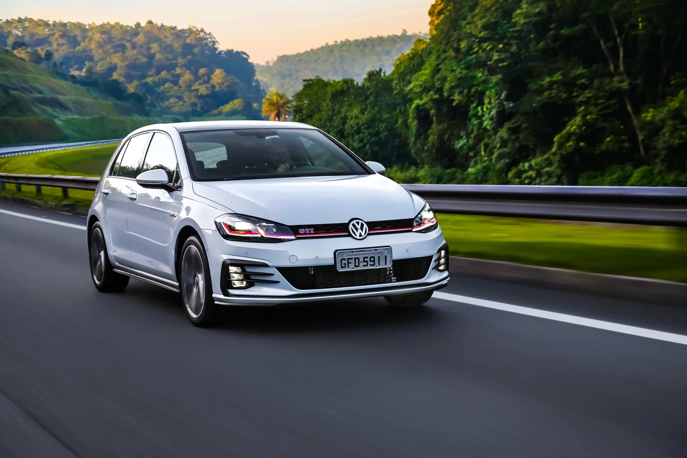
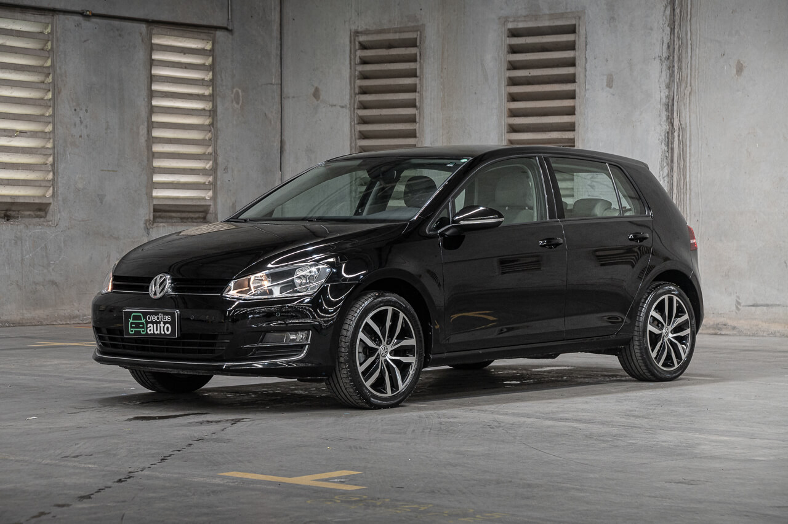

Um Golf é um Golf
O Volkswagen Golf geralmente é sinônimo de carro para quem gosta de dirigir na essência da palavra e do ato. Comportamento dinâmico apurado, construção sólida, desempenho sempre bem disposto e dirigibilidade acima da média sempre acompanharam o hatch médio desde o início de vida. Acontece que, na versão GTI, todas essas virtudes são elevadas, por isso, está empresa se especializou na venda desse carro, aqui você encontra os melhores dos melhores modelos de carro.

Porque comprar?
Primeiramente por conta do seu design maravilhoso, um carro que sem dúvidas chama a atenção outro ponto relevante é o seu desempenho. O motor 2.0 TSI com turbo e injeção direta gera 220 cv de potência a 4.500 e 35,7 kgfm a partir das 1.500 rpm. O câmbio automático DSG com dupla embreagem e seis marchas conferia a agilidade necessária ao Golf GTI alemão;
Com bloqueio do diferencial eletrônico e controle de largada, o modelo faz o 0 a 100 km/h em 6,5 segundos, enquanto a máxima é de 244 km/h. O poder de retomada em baixos e médios giros, porém, é outro destaque do modelo, com torque plano e motor cheio de 1.500 rpm até 4.400 rpm;
O acerto dinâmico de um Golf, por si só, já é passível de muitos elogios e um convite a acelerar. Mais baixa, a configuração GTI deixa tudo mais firme e divertido, especialmente em curvas, quando o carro parece um kart grudado no chão. A ótima construção fruto da engenharia alemã e da moderna plataforma MQB garantem um carro bastante preciso e estável em variadas situações. Some a isso a direção direta e obediente e a suspensão mais firme que o Golf GTI honra sua proposta hot hatch;
